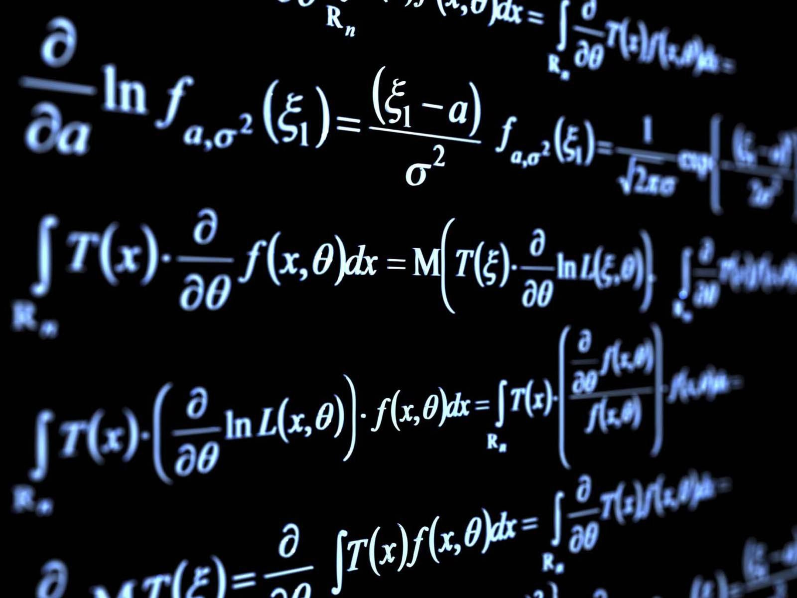

谷歌研究院分享 Antigravity /teamwork 多智能体近期结果：与人类专家合作攻关数学、化学、系统软件与机器学习工程等领域的开放问题；称来自谷歌、香港中文大学、南加州大学与卡内基梅隆大学的研究者使用 /teamwork 的 Long Proof 模式，完整证明了 2013 年信息论 Courtade–Kumar 猜想，并将全部证明形式化到 Lean 4，产生 5,000 万行代码；公司称正将这些智能体工具在 Antigravity 的 /teamwork 中向外提供


谷歌研究院于 2026 年 11 月 13 日发布博文，由 Google Fellow 兼谷歌研究院副总裁 Vahab Mirrokni 署名，题为 Advancing science & engineering with Antigravity’s /teamwork。文章称，将分享 Antigravity 的 /teamwork 多智能体系统近期结果，这些系统用于增强人类与人工智能的协作，以解决数学、化学、系统软件与机器学习工程等领域的开放问题。文中写明：“所有这些工作都是与人类专家合作完成的，我们正把这些工具向外部提供。”
文章写道，过去数周，谷歌与学术合作机构的团队，借助 Gemini 4 Argon、Gemini 4 Carbon、Gemini 4 Hydrogen，以及 Antigravity 的 /teamwork 等多智能体工作流（建立在多种 Gemini 模型之上），在信息论、形式化验证、分子结构发现与内核优化等方面取得新进展，并在谷歌内部带来若干生产基础设施收益。公司称，正把这些智能体工具放在 Antigravity 的 /teamwork 中提供（同时还有 /boost 及其他智能体），以便研究者和开发者将其用于自己的工作。文章也提到，其中许多功能已在 Antigravity 中提供，并将在未来数周提供更多更新，使全部功能对外部用户开放。
在“Mathematics and theoretical computer science”一节，文章称，来自谷歌、香港中文大学（CUHK）、南加州大学（USC）与卡内基梅隆大学（CMU）的研究者，使用 /teamwork 的 Long Proof 模式（在 Antigravity 中实现 Stellar Colosseum），完整证明了信息论中 2013 年的 Courtade–Kumar 猜想。文章解释，该结果确认：当随机比特串通过噪声信道时，把输入压缩为单个比特所保留的信息，不会多于“独裁函数”（dictator function）——即只复制输入中的某一个比特。文章称，Gemini 先发现了 CUHK 团队先前论文中一个推广猜想的反例；CUHK 团队随后提出一个新的候选函数，把该猜想约化为一个 14 变量优化问题，并给出一个关键的分析下界。随后，Gemini 4 Argon 与更早的 Gemini 模型划分参数空间，并完成了大部分新的分析界与区间算术证书；文章还称，它们在没有人工输入的情况下，把证明从平衡函数推广到非平衡函数。该团队将全部证明形式化到 Lean 4，产生 5,000 万行代码。
所有这些工作都是与人类专家合作完成的，我们正把这些工具向外部提供。
同一篇文章还列举了其他由研究者向 Gemini 4 及 Stellar Colosseum、/teamwork 等多智能体框架直接提出开放问题后得到的结果，并称作者对端到端算法与证明（常含 Lean 4 形式化）进行了核验、简化与编辑以供发表。例如：在自适应数据分析中，运行于 Gemini 4 Argon 的多智能体框架独立证明并以 Lean 验证了自适应选择统计查询的近最优样本界，填补了自 2014 年以来的空白。文章还提到形式化验证方面的进展，包括称 /teamwork-LEAP 完全自主地完成了 Weil 猜想的端到端、机器核验形式化，约 180 万行 Lean，历经 28,800 次子智能体调用。化学方面，文章称通过 /teamwork 与物理信息光谱模拟器组织 30 个专用智能体，在复杂基准分子上达到 95% 的 top-1 精确匹配和 100% 的 top-3 准确率。上述数字与表述均出自谷歌研究院该篇博文，本站未独立复核这些技术结果。
摘记，不是官方媒体。文中技术结果、合作机构与代码行数均转述谷歌研究院 11 月 13 日博文，本站未独立复核证明或实验。